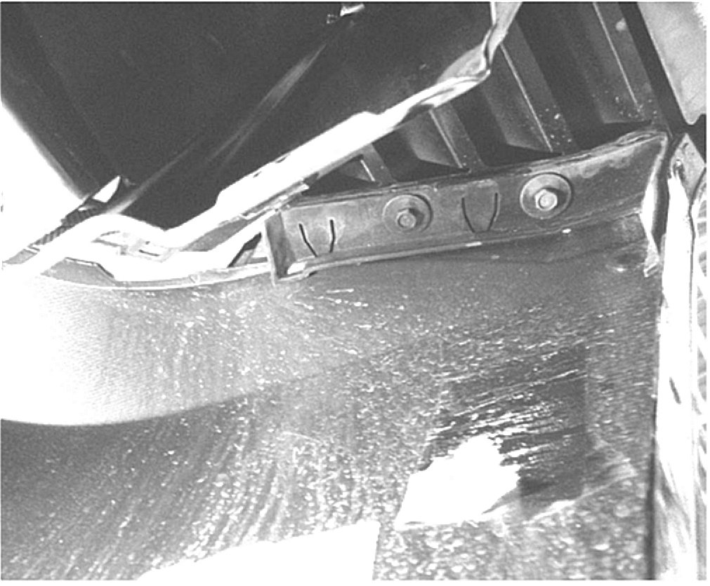
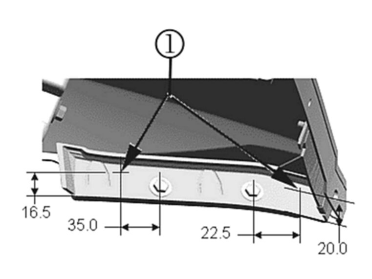
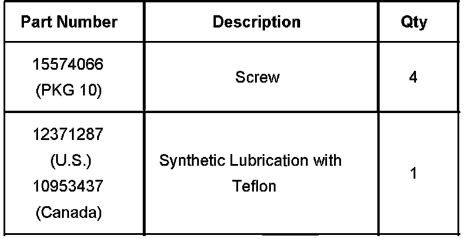
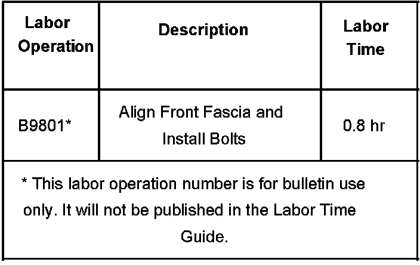

Body - Front Fascia Misaligned
Bulletin No.: 06-08-62-001ADate: December 05, 2006
TECHNICAL
Subject:
Front Fascia Misaligned/Gap at Fenders (Align Front Fascia and Install New Screws)
Models:
2007 Cadillac Escalade Models
Supercede:
This bulletin is being revised to change the bolt part number to a new screw part number. Please discard Corporate Bulletin Number 06-08-62-001 (Section 08-Body and Accessories).
Condition
Some customers may comment on a visible gap between the front fascia and fender or that the fascia protrudes out of alignment with the fender.
Cause
The current fasteners used to retain the front fascia may be lacking the proper tension, which allows the fascia to move out of alignment.
Correction
Align the front fascia to the fenders, drill new holes into front fascia mounting flange/fender and install new screws using the procedure below:
Raise and support the vehicle. Refer to Lifting and Jacking the Vehicle in SI.
Remove the left and right front wheel assembly.
Remove the right front inner wheel liner bolts and push pin retainers.
Reposition the right inner wheel liner onto the rotor assembly.

Loosen the two 10 mm fascia bolts.
Align the right front fascia to the right front fender for a desired fit of +/- 1 mm.
Tighten the two 10 mm head fender to fascia bolts.
Tighten
Tighten the bolts to 7 Nm +/- 1.0 Nm (62 lb in +/- 9 lb in).

Measure back (toward the engine compartment) from the center of the first fascia bolt 35 mm (1-3/8 in) width by 16.5 mm (5/8 in) in height and mark (1) referring to the graphic above. Measure forward (toward outer fender flange) from the center of the second bolt 22.5 mm (7/8 in) width by 20 mm (3/4 in) height and mark (1) referring to the graphic above.
Drill two new holes using a 3.2 mm (1/8 in) drill bit.
Apply GM Synthetic Lubrication with Teflon, P/N 12371287 (in Canada, 10953437) to the new drilled holes.
It is recommended to use an acid brush to apply this grease to bare edges.
Install the two new screws (1) and tighten.
Tighten
Tighten the screws to 3 N.m (26 lb in) driven to fully seated.
Reinstall the right front inner wheel liner.
Install the inner wheel liner fasteners.
Remove the left front inner wheel liner bolts, push pin retainers, and the electrical connector retainers.
Reposition the left front inner wheel liner onto the rotor assembly.
Loosen the two 10 mm fascia bolts.
Align the left front fascia to the left front fender for a desired fit of +/- 1 mm.
Tighten the two 10 mm fascia bolts.
Tighten
Tighten the bolts to 7 Nm +/- 1.0 Nm (62 lb in +/- 9 lb in.).
Measure back toward the engine compartment) from the center of the first fascia bolt 35 mm (1-3/8 in) width by 16.5 mm (5/8 in) in height and mark. Measure forward (toward outer fender flange) from the center of the second fascia bolt 22.5 mm (7/8 in) width by 20 mm (3/4 in) height and mark.
Drill the two new holes using a 3.2 mm (1/8 in) drill bit.
Apply GM Synthetic Lubrication with Teflon, P/N 12371287 (in Canada, 10953437) to the new drilled holes. It is recommended to use an acid brush to apply this grease to bare edges.
Install the two new screws and tighten.
Tighten
Tighten the screws to 3 N.m (26 lb in) driven to fully seated.
Reinstall the left front inner wheel liner.
Install the inner wheel liner fasteners.
Install the left and right front wheel assemblies.

Parts Information
Warranty Information

For vehicles repaired under warranty, use the table.

Disclaimer